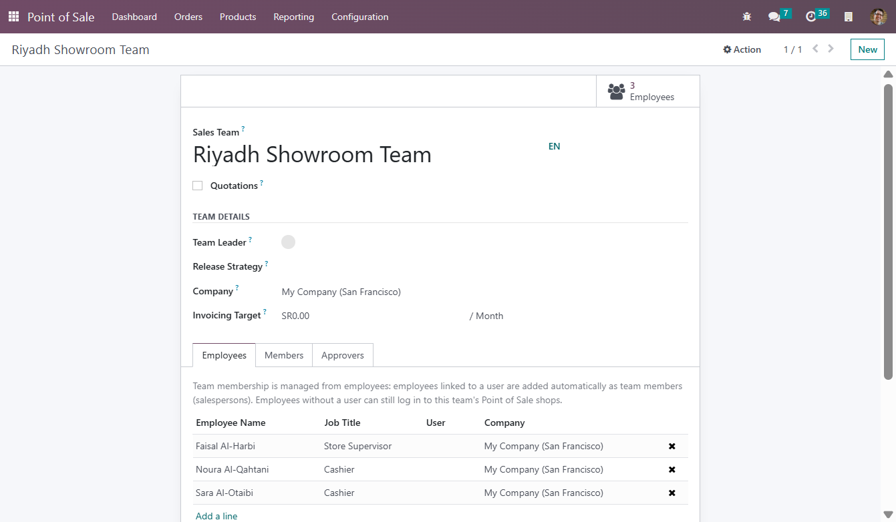
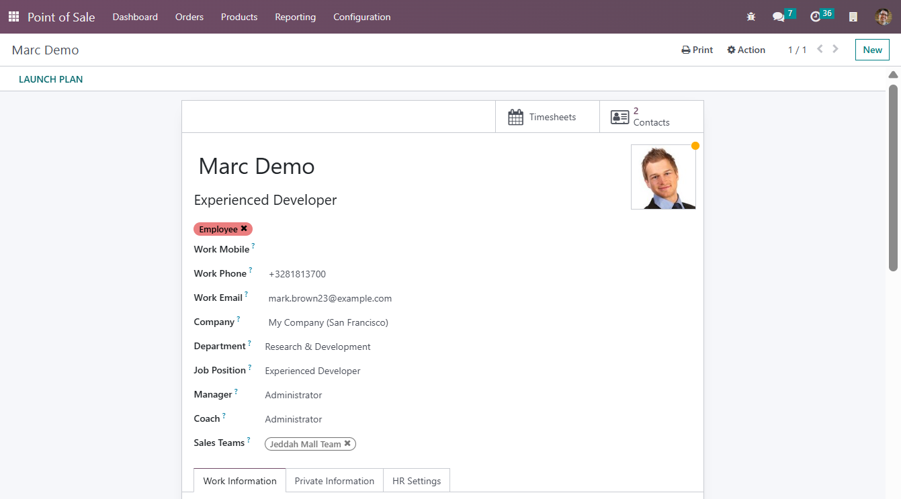
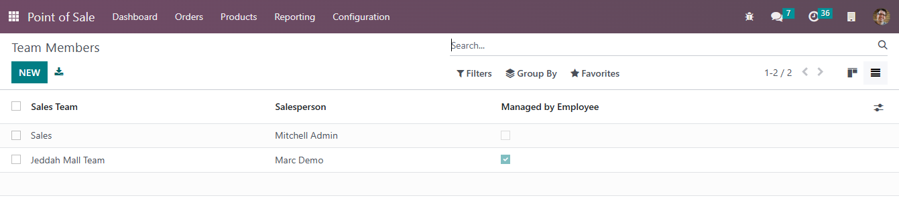
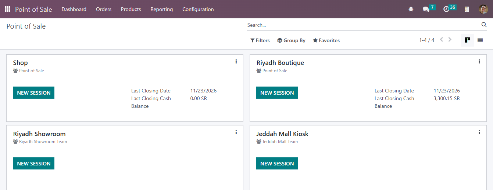
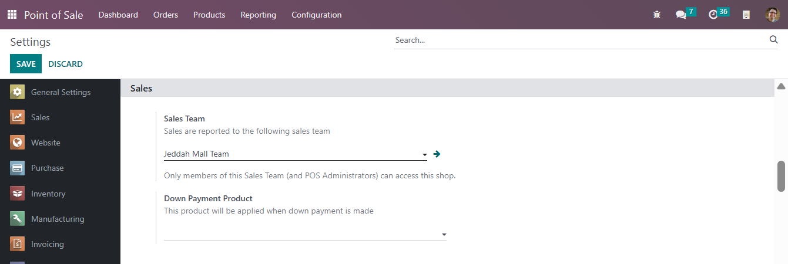
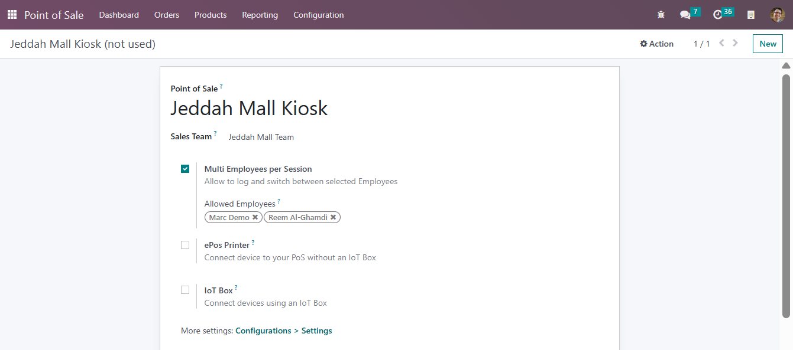
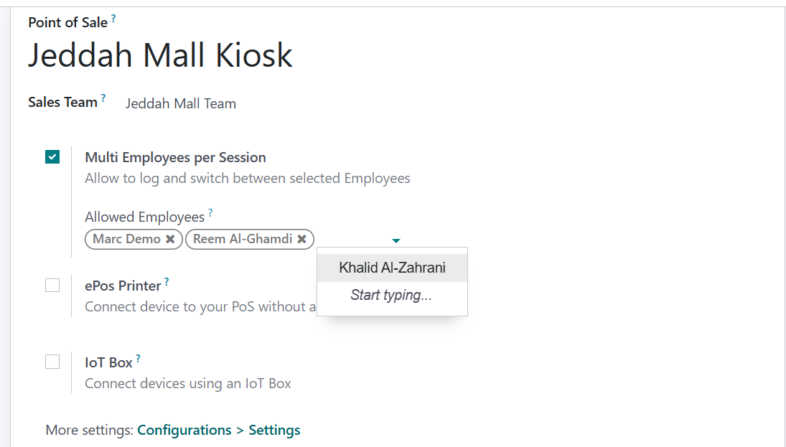
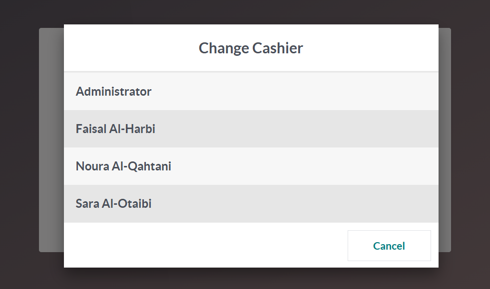

Point of Sale · Sales Teams · Employees · Access Control
POS Teams Segregation
Run every shop with its own Sales Team. Team membership comes from employees, only the shop’s team can log in to its POS, and regular POS users see and open only the shops of their own team, while POS Administrators keep access to all shops.
Odoo 19.0
Community & Enterprise
39 automated tests
English & Arabic
Technical name: pos_teams_segregation
LGPL-3
1 team per shop
Sales Team is mandatory on every Point of Sale
0 manual sync
Employees with a user become team members automatically
5 secured models
Shops, sessions, orders, payments and order analysis
39 tests
Membership, auto-team, POS login, access and upgrade
Why this module
Retailers with several branches need each shop to be run by its own team, and need cashiers of one branch kept out of the others.
In standard Odoo 19
- Sales Team members are users only: cashiers without an Odoo login cannot belong to a team.
- The Sales Team of a Point of Sale is optional, so shops end up with no team.
- Multi Employees per Session lets any employee of the company log in, or a hand-picked Basic rights list unrelated to the shop’s team.
- Every POS user can see and open every shop of the company.
- POS sessions, orders and payments of all branches are visible to every POS user.
- Opening another shop is one URL away: /pos/ui?config_id=…
With this module
- Teams are built from employees; employees with a user are synchronised to standard team members.
- Sales Team is required on every shop, with a safe default for new shops.
- The POS cashier list shows only the shop’s team employees, filtered on the server.
- Regular POS users see and open only the shops of their own team.
- Record rules segregate sessions, orders, payments and order analysis by team.
- The POS URL, session creation and data loading check team access on the server.
How it works
Four steps, all in screens you already know.
1
Build teams
Add employees on the new Employees tab of each Sales Team, or set Sales Teams on the employee.
2
Assign shops
Give every Point of Sale its Sales Team. The field is mandatory.
3
Log in by team
With Multi Employees per Session, only the team’s employees appear on the POS login screen.
4
Stay segregated
Regular POS users only reach their team’s shops, sessions and orders; administrators see everything.
Features
Screenshots use demo data: two branches, Riyadh Showroom (team: Faisal, Noura, Sara) and Jeddah Mall Kiosk (team: Khalid, Reem and Marc Demo, who has an Odoo user).
Where to find it
No new menus: everything lives in standard screens
- Sales › Configuration › Sales Teams: new Employees tab and Employees smart button.
- Employees › Employees: new Sales Teams field on the employee form, and a Sales Team search filter.
- Point of Sale › Configuration › Point of Sale: Sales Team under the shop name; Advanced, Basic and Minimal rights limited to the team.
- Point of Sale › Configuration › Settings › Sales › Sales Team: required for the selected shop.
- Point of Sale › Dashboard: each shop card shows its Sales Team.
Feature 1
Sales Teams built from employees
The Sales Team form gets an Employees tab. Cashiers without an Odoo login can belong to a team and still log in to its shops. Employees linked to a user are added automatically as team members (salespersons).

Feature 2
Team membership from the employee side, synchronised to users
Set Sales Teams directly on the employee. When the employee has a user, a standard team membership is created and flagged Managed by Employee; it is archived automatically when the employee leaves the team, is archived, or is linked to another user. Manually added members are left as they are.


Marc Demo’s membership was created from his employee; the Sales membership of the administrator stays manual.
Feature 3
Salesperson selects the Sales Team automatically
Because employees become standard team members, Odoo’s own salesperson → team logic now follows them on quotations, invoices and leads. No extra onchange fights the standard behaviour.
| Salesperson is in… | Sales Team selected |
|---|
| One team | That team |
| Several teams (Multi Teams enabled) | The current team when it is still one of theirs, otherwise their first team by sequence |
| No team | Standard Odoo fallback team of the company, the same for every unassigned salesperson |
Feature 4
Sales Team mandatory on every shop
The Sales Team sits right under the shop name and cannot be left empty. New shops get the standard Point of Sale team by default, the team must belong to the shop’s company, and a team used by a shop cannot be deleted (archive it instead). The dashboard shows each shop’s team.


Feature 5
POS employee login limited to the shop’s team
With Multi Employees per Session, employees with Advanced, Basic and Minimal rights can only be chosen among the team’s employees; leave Basic rights empty to allow the whole team. The cashier list is filtered on the server, so other employees’ badges and PINs are never sent to the POS. POS Administrators’ employees, which Odoo 19 adds to Advanced rights automatically, can always log in, so administrators never lock themselves out.


Only team employees can be picked.

Riyadh Showroom: the team’s cashiers plus the administrator who opened the session.
Feature 6
Shop access segregation that cannot be bypassed
A regular Point of Sale / User only sees the shops of a Sales Team they lead, are a member of, or are an employee of. Point of Sale / Administrator keeps access to every shop. The rule is enforced by record rules and by explicit server checks, not just by hiding menus.
Checked on the server: the shop list and dashboard, opening or resuming a session, creating a session, loading POS data, and the /pos/ui URL (which standard Odoo resolves with superuser rights). A user removed from the team loses access immediately.
Built for real-world corner cases
Behaviour you can predict, including in single-team mode and on existing databases.
One team per salesperson (standard default)
Adding an employee to a team moves them out of their previous team, exactly like standard user memberships; the team form warns before saving.
Multi Teams enabled
Employees can belong to several teams, and their users become members of each of them.
Employees without a user
They stay team employees and can log in to the team’s POS, with no fake user membership.
Employee changes
Archiving an employee, deleting it or changing its user updates memberships and shop access immediately.
Installing on an existing database
Existing shops get a Sales Team, and their allowed employees join that team so every shop keeps working. Anything that would move someone between teams is skipped and logged for review.
Employee leaves the team
They are also removed from the Advanced, Basic and Minimal rights of the team’s shops.
Team without employees
A shop using Multi Employees per Session refuses to open a session with a clear message instead of an empty login screen.
Multi-company
Team, shop and employees must share the same company; users must have access to the team’s company.
Archived memberships
Access is computed from active memberships and active employees only, whatever the context of the request.
Security
Record rules on shops, sessions, orders, payments and the Orders Analysis report.
| Who | Sees |
|---|
| Point of Sale / User | Shops, sessions, orders, payments and order analysis of Sales Teams they lead, are an active member of, or are an active employee of |
| Point of Sale / Administrator | All shops and all POS data |
| POS login screen | Employees of the shop’s team (intersected with Advanced, Basic and Minimal rights when Basic rights is set), plus POS Administrators’ employees |
| Multi-company | Standard company rules still apply on top of team segregation |
Technical details
| Odoo version | 19.0, Community and Enterprise |
| Depends on | pos_sale, pos_hr, hr (the POS Sales Team field comes from pos_sale) |
| Menus | None added; extends Sales Teams, Employees, Point of Sale shops, dashboard and settings |
| Settings | Point of Sale › Configuration › Settings › Sales › Sales Team (required). Honours Sales › Settings › Multi Teams |
| Models extended | crm.team, crm.team.member, hr.employee, pos.config, pos.session, res.users, res.config.settings; no new models |
| Install & upgrade | Pre-install hook assigns a team to existing shops; post-install hook and migration keep their allowed employees working |
| Automated tests | 39 tests: employee-based membership, single/multi team, salesperson auto-team, mandatory shop team, POS employee filtering, shop/session/order segregation, settings and upgrade repair |
| Languages | English and Arabic (i18n/ar.po) |
| License | LGPL-3 |